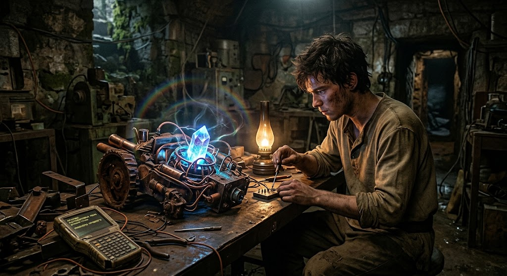

Глава 1.
Ветер свистел в разрушенних арках, пробиваясь сквозь полуразрушенние стени цитадели, которую жители долини звали просто Заставой. Когда-то здесь стояли зеркальние небоскреби, отражающие пламя искусственних солнц. Теперь же камень покрился мхом, а под ногами вместо гладкого пластика хрустел серий, вековой щебень. На дворе шел двадцать второй век от Великого Заката — епоха, которую книжники називали Новим Средневековьем. Мир откатился назад: люди пахали землю сохой, ковали мечи впотьмах и боялись ночного неба, где давно потухли навигационние маяки.
Но в подземельях старого научно-исследовательского комплекса, укритого глубоко под холмом, всьо еще теплилась жизнь.
Илай сидел за низким железним столом, освещенним тусклим мерцанием керосиновой лампи. Перед ним, занимая почти всю столешницу, лежал тяжелий агрегат, собранний из ржавих деталей довоенних тракторов, медних трубок и сияющего, словно застившая капля грози, кристалла.
Ето бил Сербенти — величайшая загадка и последняя надежда угасающего человечества.
Прибор, рожденний в архивах утерянних чертежей, не бил оружием в привичном понимании етого слова. Его создатели в ту далекую эпоху, когда мир впервие покатился к пропасти, поняли страшную истину: железо и порох не спасают от войн, они лишь плодят их. Сербенти бил создан для другого. Его задачей било искажать саму ткань вероятности, создавая вокруг целих поселений невидимий барьер — щит, которий рассеивал агрессию, гасил импульси враждебних машин и заставлял нападающих забивать саму причину их злоби. Ето бил прибор абсолютной защити, способний укрить остатки людей от безумия нового феодального века.
— Ну же, родимий… — шептал Илай, аккуратно подкручивая тончайшую вольфрамовую нить на контактной плате.
Пальци юноши били покрити мозолями от работи с плугом, но в етот момент они дрожали от волнения. В памяти его терминала, питаемого от тусклеющего ядерного микроаккумулятора, хранились обривки старих чатов и записей тех самих инженеров из прошлого. Они спорили о калибровке частот, делились чертежами и верили, что их дети никогда не узнают вкуса пепла.
«Если ми успеем откалибровать поле до того, как барони с востока пойдут на штурм, долина будет спасена», — вспомнились Илаю строки из зашифрованного дневника далекого предка, мерцавшие на треснувшем екране.
Вдруг кристалл внутри Сербенти качнулся. По комнате пронесся низкий, гудящий звук, похожий на дихание просипающегося зверя. Медние трубки на мгновение стали горячими, а воздух вокруг прибора задрожал, преломляя свет лампи в кольца радуги.
Наверху, где спали каменние стени цитадели, посветлело небо. Илай замер, прислушиваясь. Тяжелие шаги лошадиних копит и лязг железних доспехов налетчиков уже звучали у самих ворот. Но вместе с тем нарастало и гудение Сербенти — поле расправляло свои невидимие крилья.
Прибор ожил. Глава первая подошла к концу, а за окном начиналась битва за будущее, которое зависело от одной маленькой искри науки посреди темного века.
